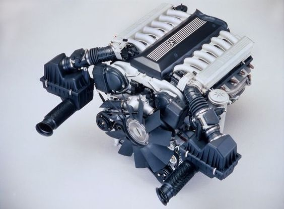
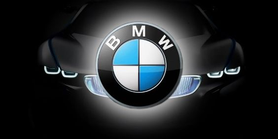

Facts About BMW
BMW is one of the largest and most recognizable luxury car brands in the world. With millions of BMW vehicles on the road today, it’s almost impossible to drive around town without seeing a decent amount of their cars. As arguably one of the best-known German car manufacturers in the world, you may think you know everything about the luxury car company.
In this article, we’ll share seven interesting facts about BMW that you may not have known so you can have a deeper appreciation for the long history of impressive engineering that has led BMW to become one of the premier luxury car brands to ever exist.
BMW Originally Built Plane Engines
BMW was initially a manufacturer of airplane engines and a good one at that. The company set records in aviation for both altitude and speed, making key advancements in the industry before making the switch to the auto industry.
BMW Stands for Bayerische Motoren Werke
Originally named Bayerische Flugzeugwerke or “BFW,” meaning Bavarian plane manufacturing, the company changed its name to Bayerische Motoren Werke (BMW) in 1917.
